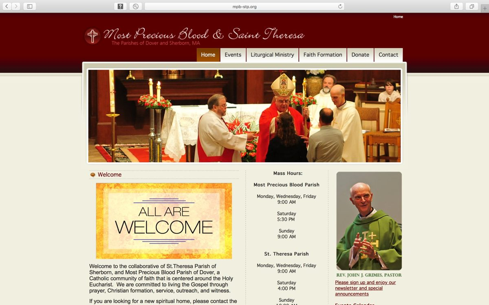
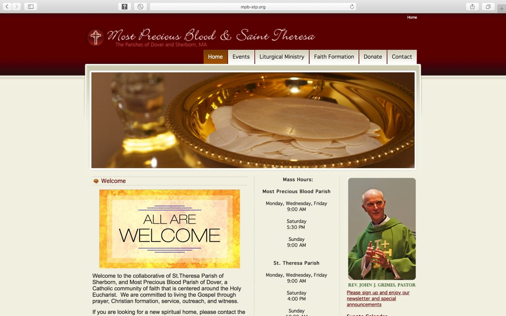
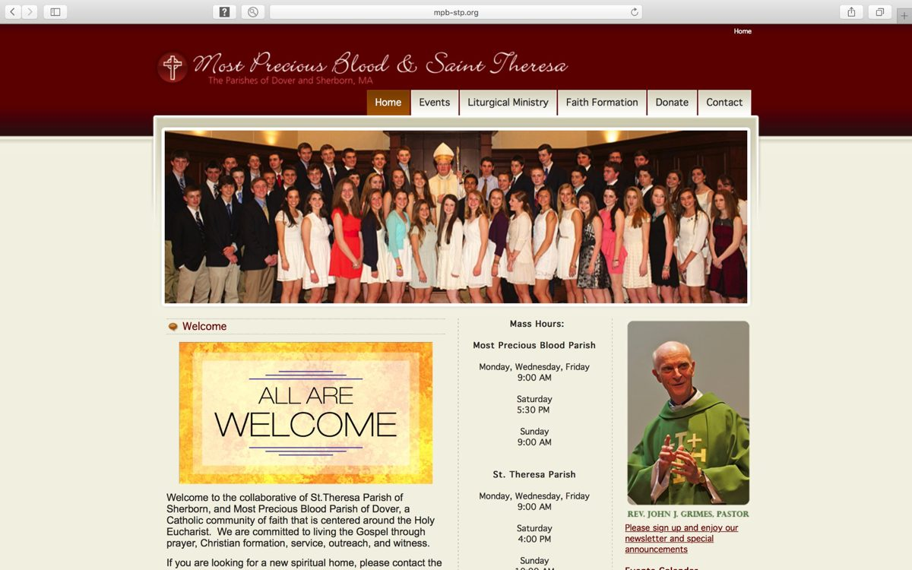
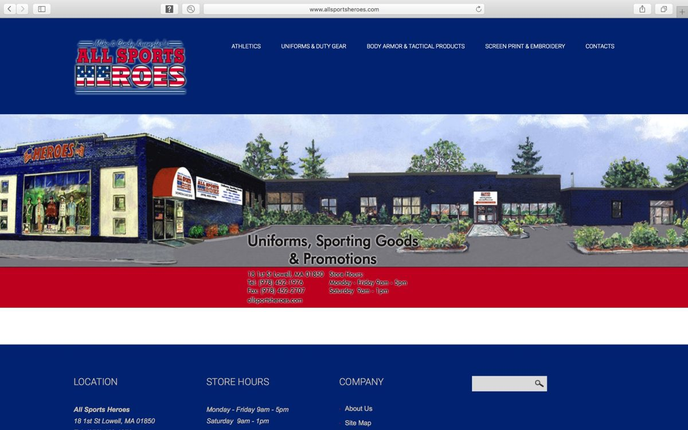
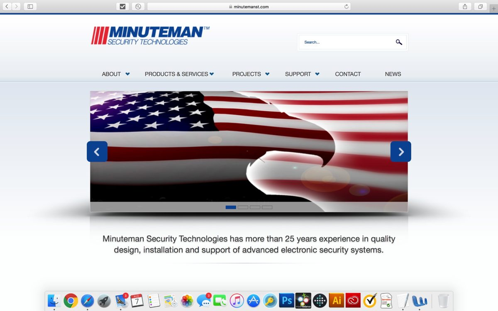
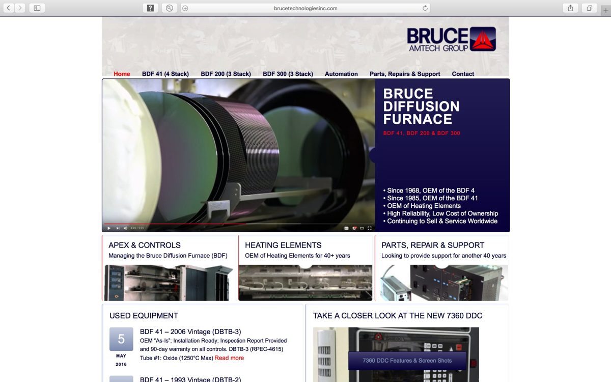
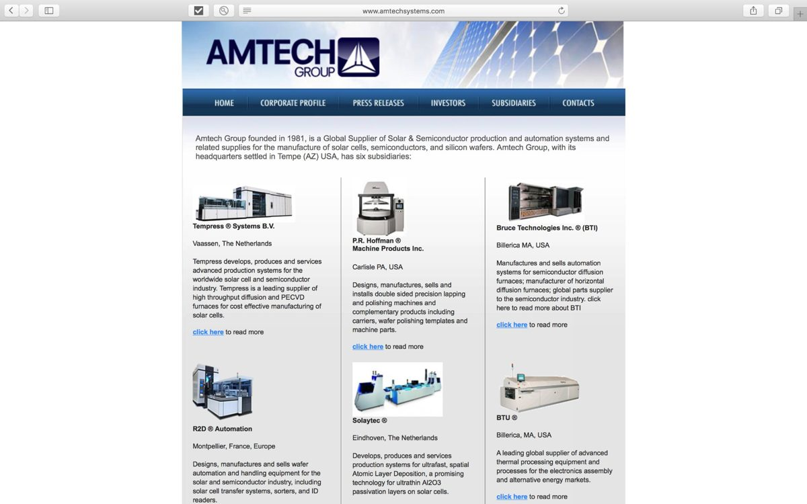
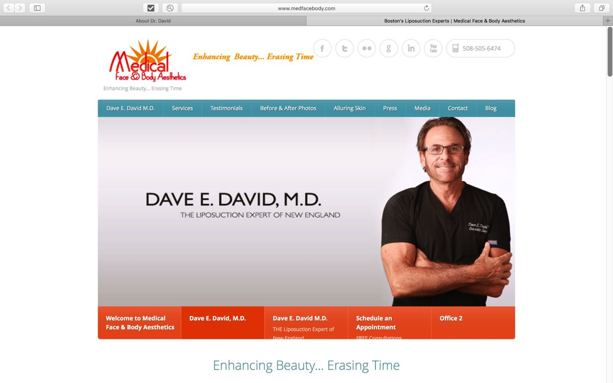
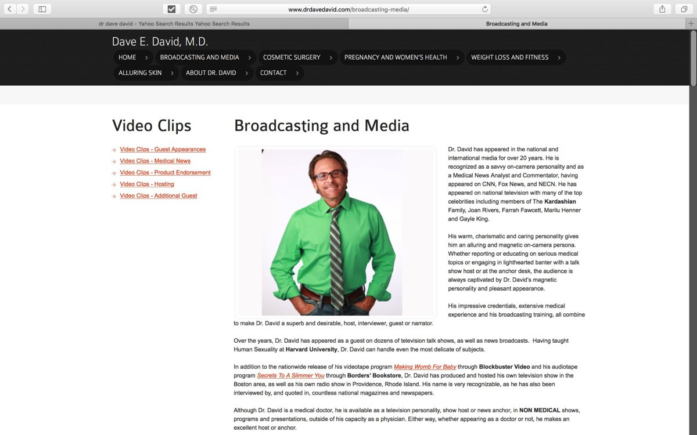
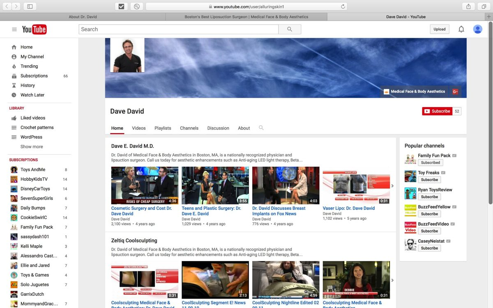

Archive of Past Client Sites
These past client sites were archived August 7, 2016.
Back to Work and Credentials · Book a Free 15-Minute Discovery Call
Most Precious Blood and Saint Theresa, The Parishes of Dover and Sherborn, MA
Volunteer Web Developer · Built on Joomla



What I did: I was the volunteer Web Developer for the parish website and the primary Web Developer for the redesign, 2012 to 2013, built on Joomla. The parish case study on this site covers the redesign, including simplified navigation, online donations, and accessibility from the start. See the parish website case study.
Links: No live link, the site has changed since 2016. Archive link: Wayback Machine, October 7, 2016
All Sports Heroes, Lowell, MA
Corporate Webmaster · January 2014 to December 2018 · Built on Drupal

What I did: I was Corporate Webmaster for All Sports Heroes, in Lowell, from January 2014 to December 2018, at the same time as Minuteman Security Technologies. I established their first website in 2014, for the CEO and GM. I did this work for $150 a month. That work is now the Professional care plan at $300 a month: a Drupal database site, graphic design and catalog, and security patching.
All Sports Heroes is a different website now. The live address redirects to All Sports Apparel Promotions, not the site I built. Use the archive link to see the site I built, as it was in 2016.
Links: No live link, the site has changed since 2016. Archive link: Wayback Machine, August 13, 2016
Minuteman Security Technologies, Andover, MA
Corporate Webmaster · January 2014 to December 2018 · Built on Drupal

What I did: I was Corporate Webmaster for Minuteman Security Technologies, in Andover, from January 2014 to December 2018, at the same time as All Sports Heroes. I reported directly to the CEO. I did this work for $150 a month. Today that same work is covered by the Professional care plan at $300 a month: a Drupal database site, graphic design and catalog, and security patching.
Links: No live link, the site has changed since 2016. Archive link: Wayback Machine, July 13, 2016
Bruce Technologies, Inc., North Billerica, MA
Corporate Webmaster · December 2009 to December 2020 · Built on WordPress

What I did: I was Corporate Webmaster for Bruce Technologies, Inc., in North Billerica, from December 2009 to December 2020. Bruce Technologies is a division of BTU, a subsidiary of Amtech Group. I managed just two corporate websites, the Bruce Technologies site and the Amtech Group site. For Michael Whang, CEO of Amtech Systems, I updated website content and did graphic design to corporate identity standards.
Links: No live link, the site has changed since 2016. Archive link: Wayback Machine, August 2, 2016
Amtech Group, Tempe, AZ, and North Billerica, MA
Corporate Webmaster · December 2009 to December 2020 · Static website

What I did: I was Corporate Webmaster for Amtech Group and the Bruce Technologies site from December 2009 to December 2020. I managed just two corporate websites, the Amtech Group site and the Bruce Technologies site. For Michael Whang, CEO of Amtech Systems, I updated website content and did graphic design to corporate identity standards.
Links: Live site: amtechsystems.com · Archive link: Wayback Machine, September 8, 2016
Dr. David, Dave E. David, M.D., Medical Face and Body Aesthetics, Boston, MA
Digital Strategist · 2011 to 2014, 3 years · Static websites



What I did: As Digital Strategist from 2011 to 2014, I built and optimized a high-traffic site for Dr. David (Dave E. David, M.D., Medical Face and Body Aesthetics) in Boston. Multimedia from this work was distributed via CNN, Fox News, and ABC Family. Those are channels, not employers.
Links: No live link, the sites have changed since 2016. Archive link: Wayback Machine, August 7, 2016, medfacebody.com · Archive link: Wayback Machine, July 27, 2016, drdavedavid.com